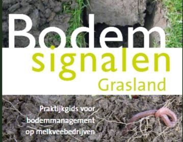

Maatregelen grasland
Maatregelen grasland
### MAATREGELEN grasland
Maatregelen op alfabetische volgorde
Inhoud
-Bemesten grasland
-Bemesten mais
BEKALKEN
De streefwaarde voor de pH-KCl of de pH-CaCl2 op zand en klei is 4,8-5,5 en op veen 4,6-5,2. Om het bodemleven te bevorderen is een minimum pH van 5,0 op zand en klei en 4,8 op veen wenselijk. Magnesium kan heel goed met magnesiumrijke kalk worden gegeven. De pH-verhogende werking is op korte termijn dan wel minder. Geef niet meer dan 1000 kg kalk 50% nw per ha per jaar.
Let goed op de eigenschappen van drijfmest en stalmest. Deze hebben beide invloed op de bodemkwaliteit en leveren beide voedingsstoffen, maar in sterk uiteenlopende mate. Hoeveelheden van aanvullende bemestingen zijn te vinden op www.bemestingsadvies.nl. Hou naast de adviezen ook rekening met gehalten in graskuil, het bodemtype, de activiteit van het bodemleven, de bodemstructuur, de groei van kruiden en vooral de groei van het gras. Wijk op grond hiervan af van de standaardadviezen (Zie ook: Organische bemesting).
BEMESTEN MAIS
#### Tips van Herman Krebbers van Delphy oktober 2020:
- Laat je drijfmest bemonsteren; in een demo in de Achterhoek varieerde het stikstofgehalte van 3,3 tot 4,8 kg N per m3, dus met de juiste gegevens benut je mest efficiënter
- Maak een bemestingsplan met juiste data gehalten mest, bodem en nalevering vanggewas. Dat loont voor rendementsverbetering;
- Werk met gedeelde bemesting en bijbemesting in juni, mogelijk in dezelfde werkgang als onderzaai vanggewas om mest beter te benutten;
- Het bijmestgiftadvies van Eurofins varieerde van 0-80 kg stikstof voor 20 ton ds mais. Je geeft bij 45 m3 regulier dus vaak teveel of te weinig stikstof;
- Meet opbrengsten om daarmee een gerichte aanpak verbetering opbrengsten en bemesting te bepalen;
- Met gratis satellietbeelden van Datafarming.com.au krijg je goed beeld van groeiverschillen in percelen om gericht die plekken oorzaak te bepalen en aan te pakken.
BLIJVEND GRASLAND
Het is belangrijk grasland zo min mogelijk te scheuren en vervolgens opnieuw in te zaaien. Bij scheuren gaat organische stof verloren, het stikstofleverend vermogen gaat omlaag en pendelende wormen worden sterk benadeeld door scheuren en opnieuw inzaaien.
BODEMANALYSE
Belangrijke analyses die om de 5 tot 10 jaar uitgevoerd moeten worden zijn organische stofgehalte, pH-waarde, fosfor als P-Al, kalium, zwavel en magnesium. Veel voedingsstoffen komen door de activiteit van het bodemleven tijdens het groeiseizoen vrij. Dat geldt in extreme mate voor stikstof, maar ook voor fosfor en de andere voedingsstoffen. Via de bodemanalyse krijg je geen inzicht in deze hoeveelheden, maar wel via de graskuilanalyse. Analysemethoden die veel aandacht geven aan makkelijk oplosbare voedingsstoffen (water, zout, licht zuur oplosbaar) en aan de hand hiervan adviezen geven leveren geen goed onderbouwde adviezen. Dit zijn onder meer analyse via Albrecht, Groeibalans, Soil Tech.
DOORZAAIEN
Op veen en klei met teveel ruwbeemdgras kan doorzaaien met Engels raaigras goed werken. Er mag niet te veel ruwbeemdgras staan. Doorzaaien kan het beste in februari of maart of in september en oktober. Gebruik eerst een wiedeg voor inzaai.
GRAS-MAIS VERHOUDING
Op een bedrijf is een verhouding van 80% gras en 20% mais gebruikelijk. Bij het scheuren van het gras gaat veel organische stof verloren en spoelt veel stikstof uit. Beter is de verhouding: 60% gras, 20% gras, rode en witte klaver gedurende 3 jaar en 20% mais gedurende 3 jaar.
GRASKLAVER
Grasklaver stimuleert regenwormen en bindt 200-300 kg stikstof (N) per ha. Zaai zowel rode als witte klaver in. Rode klaver heeft een penwortel en wortelt dieper. Zaai voor een 3-jarige maaiweide 30 kg BG3 of BG4 en 5 kg rode 3 kg witte klaver. Zaai dit ook in voor weide, maar dan 2 in plaats van 5 kg rode klaver. Inzaaien eindaugustus/begin september.
-Zaai een gras-klaver mengsel niet te diep. 1-1,5 cm is het beste. Gras zonder klaver kan wel dieper gezaaid worden.
-Zaai in het najaar zo vroeg mogelijk. Bij laat zaaien kans op vorstschade.
-Weinig beschikbare stikstof is belangrijk. Na langdurig bouwland ontwikkeld klaver zich beter dan na langdurig grasland.
-De rhizobiumbacterie die de stikstof helpt binden moet voldoende aanwezig zijn. Dat is in het algemeen het geval. Alleen na een lange periode akkerbouw zonder gras kan enten van het klaverzaad met rhizobium soms zinvol zijn.
Een van de redenen dat klaver kan verdwijnen is te veel stikstofaanbod. De klaver zelf kan hier de oorzaak van zijn. Er zijn wel verschillen per ras.
-Schade door insecten en slakken kan beperkt worden door een ras te nemen met een hoger gehalte aan blauwzuur. Bijvoorbeeld Alice of Riesling.
-Rassen met een beter ontwikkelde penwortel herstellen zich sneller na een strenge winter. De penwortel lijkt in een droge zomer geen voordeel te bieden.
-Een goede kalium- en zwavelvoorziening is van belang. In mindere mate ook fosfor en magnesium.
KRUIDEN
Diep wortelende kruiden zijn belangrijk om de dikte van de laag met beworteling (ook van gras) te verhogen. Ze ondersteunen datgene wat pendelende regenwormen al deden. Ze voorkomen uitspoeling van voedingsstoffen. De droogtegevoeligheid van de grond wordt verlaagd.
Andere kruiden zijn vooral van belang voor de voederkwalieit van het gras en de smaak van melk.
Rietzwenkgras kan goed tegen droogte en is gunstig op droogtegevoelige percelen. Op betere percelen kan het moeilijk concurreren met Engels raaigras.
Smalle weegbree, cichorei en karwij kunnen goed samen met rode en witte klaver worden ingezaaid. Zaai naast gras per kruid 1 kg zaad per ha. Kies het ras Puna II bij cichorei, Hercules bij weegbree en Sonja bij karwei.
Meer over kruiden: (Bron: van gepeperd naar gekruid grasland LBI 022-lbD 2017)
• Geschikte kruiden voor productiegrasland. Naast paardenbloem, witte en rode klaver en luzerne, kunnen smalle weegbree, cichorei en karwij zich het best handhaven in productiegrasland. Vooral in de drogere graslanden die beweid worden kan ook duizendblad zich redelijk handhaven. Daarnaast is er ook met wilde peen, rolklaver, esparcette of kleine pimpernel nog een redelijke kans op succes, vooral in de drogere graslanden met een lager productiepotentieel. Andere kruiden hebben meestal slechts een zeer beperkte slagingskans in productiegrasland.
• Zaadhoeveelheid. De gewenste zaadhoeveelheid is afhankelijk van de hoeveelheid kruiden die gewenst wordt. Bij minder goede omstandigheden kan het verhogen van de zaadhoeveelheid helpen, maar als de concurrentiekracht van de andere ingezaaide soorten te groot is, werkt dit maar matig. Zo stoelt Engels raaigras vrij sterk uit en concurreert het sterker met kruiden dan bijvoorbeeld timotheegras dat een open zode geeft. Ook witte klaver heeft minder negatieve effecten op kruiden, maar verrijkt de bodem wel met stikstof waardoor op termijn gras weer dominant kan worden.
• Lage bemesting voor inzaai en eerste snede. Bij minder optimale omstandigheden worden ook bij deze zaaizaadhoeveelheden regelmatig bedekkingspercentages van slechts 5 à 10% bereikt: inzaaiomstandigheden, en dan vooral een lage concurrentie met snelgroeiende grassen tijdens de vestiging, zijn minstens zo belangrijk voor de meeste kruiden. Een lage of geen bemesting voor inzaai en eerste snede wordt dan ook sterk aanbevolen. Dit zal ook de beworteling van alle aanwezige kruiden en grassen sterk bevorderen 1.
• Tijdstip inzaai. De meeste kruiden kenmerken zich door hogere kiemingstemperatuur dan gras, een trage kieming en/of een trage begingroei. Daarom is inzaai eind april/mei aan te bevelen (met het risico op vochtgebrek). Eventueel kan ook voor eind augustus worden ingezaaid.
• Doorzaaien is altijd lastig (ook van Engels raaigras of klaver) en heeft alleen enige kans bij optimale omstandigheden. Daarvoor moet de productie van het huidige gras zo goed mogelijk worden beperkt (geen bemesting) en moet er een open zode aanwezig zijn. Maar ook dan overleven alleen de sterkste of snelstkiemende kruiden zoals cichorei, weegbree, karwij, paardenbloem en rode klaver. Andere kruiden maken alleen bij herinzaai enige kans.
ONTWATERING
Bij een slechte ontwatering zijn er vaak meer vochtminnende grassen die een open graszode geven. Er zijn vaak ook plassen op het land. De bodem verdicht.
Vaak is de reden een verdichte laag in de bodem. Graaf een kuil om dit te beoordelen. Een niet goed functionerende drainage kan ook een rol spelen. Op zware klei zijn vaak greppels nodig. Pas op goede gronden sleufloze drainage toe. Bij gronden met storende lagen moet met een kettingmachine worden gewerkt. Bij sterk verdichte gronden met blijvende problemen is toepassing van drainagezand in de sleuf van belang.
ORGANISCHE BEMESTING
Drijfmest en wortelresten van klavers stimuleren de grauwe regenwormen. Vaste mest stimuleert de rode wormen die in de bovenlaag leven en de pendelaars die diepe verticale gangen maken. Alle drie de groepen wormen heb je nodig.
Rijd mest uit wanneer de bodem niet te nat is. Gebruik bij drijfmest de sleepslangmethode. Bj een nat voorjaar de vaste mest na de eerste snede uitrijden.
Bij de bemesting van grasland zijn te onderscheiden meststoffen die direct voedingsstoffen leveren en meststoffen die dat op langere termijn doen en tevens de bodem verzorgen. Drijfmest hoort tot de eerste groep, stalmest tot de tweede.
Veel aandacht vergt de groei in het voorjaar. De bodem is dan nog koud en drijfmestgiften verhogen de opbrengst dan sterk. Een drijfmestgift in maart en een gift in mei hebben veel effect. In maart kan onder natte omstandigheden en bij bodems met een slechte structuur of een hoger organische stofgehalte wel structuurschade ontstaan waardoor de groei wordt afgeremd.
Vaste mest in het voorjaar heeft vooral op zandgrond een gunstig effect. Op zwaardere grond is de werking veel minder. Vaste mest in het najaar gegeven kan tot gevolg hebben dat de extra grasgroei hierdoor niet geoogst kan worden. Het vraagstuk van het tijdstip van bemesten van vaste mest is nog niet geheel opgelost. Soms wordt de vaste mest in augustus gegeven met het idee dat dit op langere termijn de beste opbrengst en bodemverzorging geeft. Lange termijnproeven om dit te evalueren bestaan evenwel niet.
Zandgrond is veel gevoeliger voor het tijdstip van bemesting dan zware kleigrond. Wel is structuurbederf bij uitrijden op kleigronden vooral in het voorjaar een probleem.
Bemesting heeft ook veel invloed op de klavergroei. Een te grote aanvoer van stikstof met drijfmest kan de klavergroei sterk afremmen. Anderzijds is voor een goede klavergroei een goede voorziening van kalium en zwavel van veel belang.
ORGANISCHE STOF
Een hoog organische stofgehalte nastreven is belang voor vochtvoorziening, stikstofleverend vermogen en vele andere belangrijke bodemeigenschappen. De organische stof van een organische stofbron die na een jaar nog in de bodem aanwezig is heet Effectieve Organische Stof (EOS). Alleen deze organische stof draagt bij aan de organische stof die op langere termijn in de bodem is. 20 ton rundveedrijfmest levert 900 kg EOS en 20 ton rundveestalmest 2000 kg EOS. Gras zelf levert 3700 kg EOS per ha en is daarmee de belangrijkste organische stofbron.
SPORENELEMENTEN
Bij een goede zuurgraad van de bodem, voldoende bodemleven en organische stof komt gebrek aan sporenelementen bijna niet voor. Toch is aandacht belangrijk.
Als voorbeeld selenium. Selenium is belangrijk voor mens en dier, maar niet voor de plant. Seleniumgebrek kan optreden bij te hoge pH, en een hoog gehalte aan fosfaat en zwavel. Op arme zandgronden is de kans op gebrek het grootst.
De streefwaarde van Selenium is gras is 0,15 mg Se per kg droge stof. Is het gehalte duidelijk te laag dan kan selenium aangevoerd door aankoop van mest of compost van elders (bijvoorbeeld jonge zeeklei). Indien niet mogelijk dan enkele jaren 8 - 10 gram Se /ha in twee giften in de vorm van de goed opneembare selenaat, zoals Na2SeO4.
VERDICHTING
Verdichting van de bodem heeft een sterke negatieve invloed op de opbrengst, vochtvoorziening en benutting van voedingsstoffen. Ook hoeft het gras minder vaak opnieuw ingezaaid te worden.
Graaf een kuil en beoordeel de stuctuurelementen en de beworteling.
Verdichting ontstaat vooral door berijden en dan zijn bemesten en ruwvoederwinning het meest schadelijk. Zorg voor een goede ontwatering. Maak de zode steviger door veldbeemdgras mee te zaaien. Dit gras vormt uitlopers onder de grond. Meer beweiden betekent minder rijden. In het voorjaar een bandenspanning van 0,4 en in de zomer 0,8. Gebruik in het voorjaar de sleepslang. Kies bij natte omstandigheden beweiden van percelen die ertegen kunnen of hou de koeien nog even binnen.
WEIDEN OF MAAIEN
Weiden is beter voor de bodem dan maaien. De zode is onder meer dichter en de bodemstructuur wordt beter onderhouden. Bij weiden zijn er meer gewasresten die samen met mestflatten rode en pendelende wormen stimuleren.
Goede maatregelen zijn naweiden met jongvee of schapen. Verdeel het weiden over zoveel mogelijk percelen.
LITERATUUR
Bokhorst, J.G en C. ter Berg, 2001. Handboek Mest en Compost. Vernieuwde versie te lezen onder goedbodembeheer.nl / Maatregelen / Mest en compost.
Eekeren, N. van, B. Philipsen, J. Bokhorst en C. ter Berg, 2019. Bodemsignalen grasland. Roodbont Publishers Zutphen.
Janssen, P. en N. van Eekeren. Ekoland 1, 2020, p 18 en 19.
Wagenaar. J.P. e.a., 2017. Van gepeperd naar gekruid grasland. LBI 2017 022-lbD.

Het boek Bodemsignalen Grasland is in 2019 verschenen en is het standaardwerk over het beheer van de bodem onder grasland (Uitg. Roodbont, Zutphen)